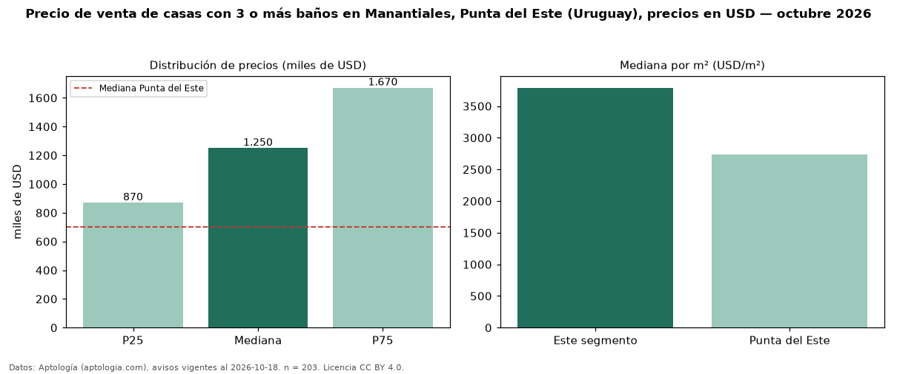

Precio de venta de casas con 3 o más baños en Manantiales, Punta del Este (Uruguay), precios en USD — octubre 2026
Con 203 avisos vigentes, el precio mediano de casas con 3 o más baños en venta en Manantiales, Punta del Este (Uruguay) es USD 1,25 millones. Frente a la mediana de todas las casas en venta de Manantiales (USD 1,10 millones, n = 263), queda 14 % por encima; este segmento reúne el 77 % de esos avisos. Por metro cuadrado, la mediana es USD 3.789/m² (n = 178), 1 % por encima del conjunto de referencia (USD 3.750/m²). El área mediana anunciada es 347 m². El segmento con más oferta es el de 3 o más habitaciones (199 avisos, mediana USD 1,25 millones). La cuota de mantenimiento o condominio mediana declarada es USD 600 al mes (n = 21). La mitad central de los avisos va de USD 870.000 a USD 1,67 millones (razón 1,9), una dispersión moderada. La mediana de todas las casas en venta de Punta del Este es USD 700.000 (+79 % de diferencia). Datos: Aptología (aptologia.com), CC BY 4.0 — https://www.aptologia.com/uy/venta/punta-del-este/manantiales. Archivos: PDF, CSV con las cifras y gráfica PNG.

| Avisos únicos | 203 |
|---|---|
| Percentil 25 | COP 870.000 |
| Mediana | COP 1.250.000 |
| Percentil 75 | COP 1.670.000 |
| Mediana por m² | COP 3.789 |
Fuente: avisos vigentes de portales inmobiliarios recopilados por Aptología, deduplicados (mínimo 30 avisos únicos por celda). Precios pedidos, no cerrados. Fecha: 2026-10-18.